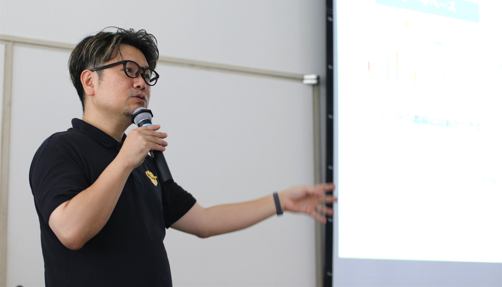
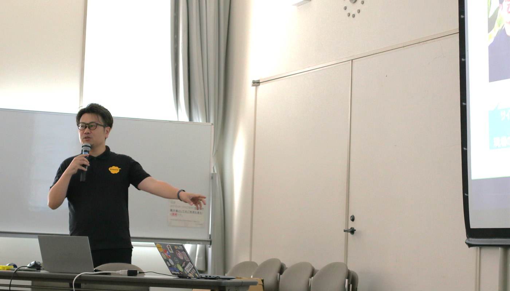

講演1
kintoneで実現できる業務改善
サイボウズ株式会社 リージョナル第1営業部 山田 英生 氏


概要
kintoneの基本的な仕組みや機能、そして民間・行政・地域活動における具体的な業務改善のアプローチについて解説されました。
さらに、kintoneが得意とする「データやノウハウの共有」を活かした「社協間でのシステム・知恵のシェア（シェアDX）」という新しい可能性や、最新のAI連携機能について提示されました。
発表の重要トピック
- kintoneの「3つの基本機能」kintoneは、データの蓄積と分析を行う「データベース」、申請・承認や進捗管理を行う「ワークフロー」、そしてデータに紐づいて直接会話ができる「コミュニケーション（コメント機能等）」の3つを基本機能として備えたノーコード・クラウドサービスです。ドラッグ＆ドロップで誰でも簡単に自組織に合ったアプリを作成できます。
- 「シェアDX」という社協ならではの強みkintoneで作成したアプリは、簡単にZIPファイル形式でテンプレート化してエクスポート・共有が可能です。非営利で運営され、地域が違っても業務内容が似通っている社協の特性を活かし、他社協の優れたシステムをテンプレートとしてコピーして自組織に合うよう項目を調整する「社協間でのノウハウシェア」が始まっています。
- 個人情報のセキュリティ保証クラウドへ個人情報を掲載する懸念に対し、kintoneが政府情報システムのためのセキュリティ評価制度である「ISMAPクラウドサービスリスト」に登録されている実績を提示。ISMAP登録を根拠に庁内・組織内のセキュリティポリシーを変更し、インターネット版kintoneで機密性2以上の情報を安全に扱う自治体が増加しています。
- 蓄積データを活かす「kintone×AI」の最新機能日々の業務で蓄積されたデータを活用し、マニュアルや問い合わせ履歴を安全に横断検索する「検索AI」、日報や活動記録を自動要約する「レコード一覧分析」「スレッド要約AI」、そしてAIとのチャットで簡単にアプリを生成・設定できる「アプリ作成AI」などの最新機能が紹介されました。